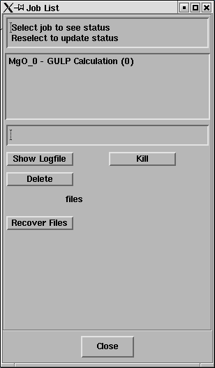
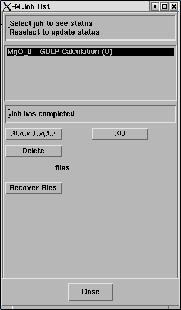

In this exercise you will calculate the internal energy of an MgO crystal.
Load the structure in MgO.str
File->Load Model->from File
Cick on Browse
Select MgO.str
Select OK
Select OK
A model of MgO should have appeared in the DLV 3DView window.
This structure should look reasonably familiar it is the rocksalt (NaCl)
lattice - with oxygen ions (red) and magnesium ions (green) drawn at their
ionic radii.
On main panel the square icons are toggles which control how the 3D structrue is displayed. A help message is displayed when you pass the mouse over each button. At first you are in rotate mode and can spin the structure by dragging with the right mouse button. Try changing to scale mode and translate mode etc.
Open the Structure Display panel
Display->Structure
Try out the controls on this panel - you can change the size of the atoms, display bonds, multiple unit cells etc etc.
Give the current model a suitable name. This will be used as the
label for this model in subsequent GULP simulations.
Edit -> Model -> Name
Change "Model_1(MgO.str)" to something suitable; say "MgO".
Note:
For the change to take effect you must press Return.
You'll see the name of the graphics window change to "DLV 3DView - MgO";
Now open the Execute GULP panel.
Calculate -> GULP -> Execute GULP
This panel will pop up;
As a first step GULP will be used to compute the energy per unit cell of MgO.
The symmetry of the crystal fixes the positions of the atoms within the cell and constrains the cell to be cubic. Thus, one the symmetry is given the whole structure is determined by the positions of the two atoms in the unit cell and the value of the lattice constant a.
In order to compute the energy we must choose a force field or potential model to describe the interactions between the Mg and O ions.
Click on Select potentials
Select ionic.lib on the GULP Potential parameters panel
Ensure that the Include Shells option is NOT selected
This is a simple force field for MgO - the Mg ion is given a charge of
+2e, the O ion -2e and a simple Buckingham repulsive potential operates
between the ions. A good article for further reading about such force fields
is
T.S.Bush, J.D.Gale, C.R.A.Catlow and P.D. Battle J. Mater
Chem., 4, 831-837 (1994)
Now you can run the calculation
Select Single Point on the Execute GULP panel
Click on Run
The Job List panel will open automatically and look something like this;

Select the job and the status line should
report "Job has completed" - like this;

Click on Recover Files.
A window will open displaying the output from the GULP calculation (the LogFile).
It should look something like MgO_0.txt
Take some time to read through the LogFile.
To describe a crystal structure it is necessary to specify a box
called the unit cell which is repeated in order to create the
periodic lattice.
In the LogFile GULP describes MgO using a primitive unit cell. The cell vectors of this cell are (in Angstrom);
0.0000 2.10597 2.10597
2.10597 0.0000 2.10597
2.10597 2.10597 0.0000
These vectors form a rhombohedron of side 2.9783 Angstrom and internal angle 60 degrees.
The same lattice may also be described by a crystallagraphic (conventional) cell which is a cube of side 4.212 Angstrom (the lattice constant).
You can see the two cells using the Display->Structure panel.
Turn on draw lattice and select either Primitive or Conventional as the cell type.
The primitive cell of MgO is a rhombohedron and is the smallest cell that an be used to
generate the crystal, the conventional cell has four times the volume but is a cube
and better reflects the true symmetry of MgO - most crystallograhic studies will refer to
this cell.
You can build the lattice of MgO by repeating either cell.Turn on label lattice to see the a, b and c lattice vectors labels.
Use the na, nb and nc sliders on the Display->Structure panel to draw multiple cells.
After describing the structure the LogFile reports the interaction potentials that describe the Mg-O bonding (under the headings "Species output" and "interatomic potentials"). Then the total energy due to the inter-atomic forces (both short range repulsions and electrostatic interactions) by summing over the infinite lattice. This energy should be -41.07531759 electron-Volts (or eV) per primitive unit cell; it is the "binding energy" of the crystal - ie: the energy required to pull all of the ions of the crystal to infinite separation.